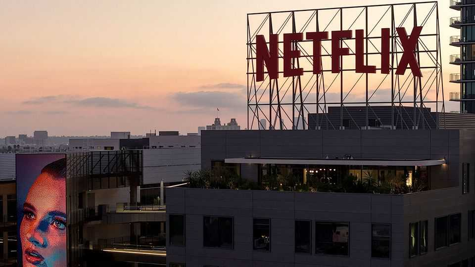
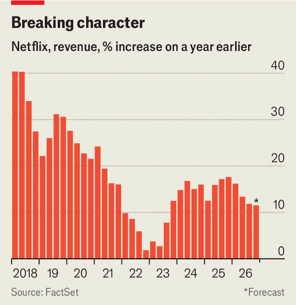

Is Netflix losing the plot?
The rise of YouTube has shifted the ground under the streamer’s feet

Oct 22nd 2026
Last week Netflix unleashed a round of bloodletting in Hollywood reminiscent of a Quentin Tarantino film. The streaming giant fired about 6% of its staff, the biggest round of lay-offs since 2022, and purged some of its most senior creative executives. The aim, no doubt, was to assuage investors’ concerns about the effect of a drought of hit shows on its revenue. But alas, à la Tarantino, the plot thickens.
Its quarterly results on October 20th showed what a funk Netflix is in. The company reported year-on-year revenue growth of 11.8% in the quarter ending in September, and forecast that in the final three months of the year the figure would fall to 11.5%, down from 17.6% in the same period in 2025 (see chart). The news sent Netflix’s shares sliding. Its market value has fallen by almost half in the past year.

A company that once looked so unstoppable that it was valued as a tech firm now disappoints shareholders with the regularity of a stodgy media company. Some wonder whether it will next break its promise to keep revenue growing by double digits into 2027. The bigger question is whether its co-chief executives, Ted Sarandos and Greg Peters, are capable of changing the script.
Their approach to a year of anaemic viewership, a shortage of zeitgeisty shows and a weak showing in American television’s Emmy Awards is to blame their underlings. Bela Bajaria, Netflix’s head of content, got the sack, along with two other senior executives. Ms Bajaria, who spent nearly ten years at Netflix, was replaced by Peter Rice, a newcomer formerly at Fox and Disney.
Netflix will be hoping that Mr Rice can raise the flagging hit rate of its shows with American viewers. The trouble, however, is that Mr Sarandos still holds overall responsibility for the company’s content strategy. “Why fire Bela and not Ted?” asked LightShed Partners, a firm of analysts.
Lacklustre content is not the only reason for investors’ disgruntlement. During the past year Netflix tried and failed to acquire the film and TV studios of Warner Bros Discovery, a Hollywood colossus, losing out to Paramount Skydance, a smaller Tinseltown rival. Some consider the endeavour to have been a misguided distraction that signalled a lack of confidence in Netflix’s prospects. “They never really gave a good reason for it,” says Tom Harrington of Enders Analysis, a media-research firm. “If you want more movies, just make more movies. You don’t need to buy this giant thing.”
Mr Sarandos tried his best on the earnings call to persuade investors that, despite weakening growth and Netflix’s attempt at a colossal acquisition, there was “no need for a fundamental shift in strategy”. Yet the entertainment business is in the midst of upheaval. As the pioneer of streaming, Netflix used to set the pace for others to follow. Now YouTube does. According to Nielsen, a market-research firm, for the past four years more people have streamed YouTube than Netflix on their TVs. As the video-sharing platform’s most successful creators move up market, they are increasingly invading Netflix’s territory. And on mobile, YouTube, TikTok and Instagram each grab far more attention than Netflix.
Like other streaming services, such as Disney+, Netflix is reacting. It has introduced short-form videos suitable for the vertical format of smartphones, has wooed some YouTube creators and is expanding its efforts around live entertainment, including sports. But it is getting harder for Netflix to stand out, and its response to the new competition looks increasingly haphazard. “It’s YouTube panic,” says Mr Harrington of Enders.
For all that, Netflix’s great strength is its capacity to make money from streaming. As Maria Rua Agouti of Omdia, another research firm, puts it: “People watch YouTube but they pay for Netflix.” For now, YouTube’s subscription business is still relatively small.
Netflix also still has high hopes for its effort to sell ads, which it initiated during its previous slump in 2022. Yet that sideline—which is Mr Peters’ responsibility—has lately been disappointing. On the earnings call Mr Peters said that he expects ad revenue of $2.7bn this year, below the $3bn previously forecasted, owing to delays in the adoption of new ad products. If YouTube and others continue to steal viewers’ attention, hitting such targets will only get tougher. Mr Peters, like his co-chief, offered no indication of a shift in approach. Eventually investors may demand a different kind of bloodletting. ■